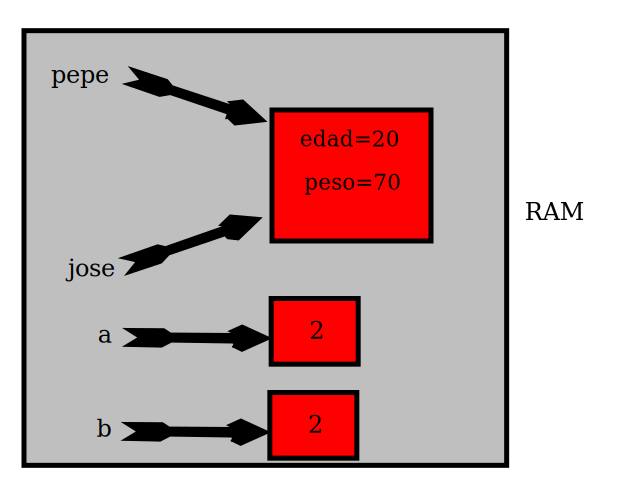

Uno objeto será como una caja en la que vamos a poder almacenar otras cajas. Es decir, tendremos una variable y dentro de esta variable se podrán almacenar más variables o funciones. Por ejemplo, se ha estado usando la función "document.write()". Lo que realmente se ha estado haciendo es del objeto document, usar la variable write que alamacena una función. El operador "." (punto) sirve para obtener los contenidos de un objeto. Por ejemplo:
Como se ve en el ejemplo, dentro del objeto document, se han almacenado las variables a y b y nos referíamos a ellas como document.a y document.b.
Hay varias formas de definir un objeto en Javascript. Lo más común es usar una función. La palabra clave this se referirá al objeto que estamos creando o manejando. Por ejemplo:
Como se puede ver dentro de la función Persona se hacen varias referencias a this que es el objeto que se está creando. Se puede apreciar que se le han asignado las variables edad, altura y peso. También se le ha agregado la función engordar.
A las variables que se definen dentro de un objeto se las llama atributos. A las funciones que se definen dentro de un objeto se las llama métodos.
El ejemplo anterior se puede ver que para crear un nuevo objeto se usa el operador new. Usando new se crea el objeto pepe y se acceden a sus atributos y métodos:
var pepe = new Persona(20);
document.write("Edad " + pepe.edad + "<br/>");
document.write("nombre " + pepe.nombre + "<br/>");
document.write("altura " + pepe.altura + "m <br/>");
document.write("peso " + pepe.peso + "kg <br/>");
pepe.engordar(11);
document.write("Ha engordado. peso " + pepe.peso);
Las variables tienen una forma especial de tratar a los objetos. Veamos el siguiente ejemplo:
Por defecto cuando se crea el objeto pepe, su peso es 70. Hemos asignado a la variable jose, la variable pepe. Después se ejecuta jose.engordar(10). Cuando se muestra el peso de pepe, se puede ver que pepe ha engordado. ¿Por qué? Porque jose y pepe son el mismo objeto. En la memoria RAM del equipo se crea una zona para almacenar al objeto pepe, cuando se hace jose=pepe, se le está diciendo a la variable jose que apunte a donde está almacenado el objeto pepe:
Pero para el caso de variables que no son objetos, como los números, javascript sí saca una copia, como se puede ver en las variables a y b. Al hacer b=a, javascript saca una copia de a y se la asigna a b por lo que a y b apuntan a regiones diferentes de la RAM. Por ello, al modificar b, no se modifica a.
Los navegadores definen sus propios objetos, con lo que se va a disponer de un arsenal de objetos ya preparados para realizar algunas acciones. En el siguiente enlace se encuentra una guía rápida para ver los objetos y sus métodos:
http://www.dannyg.com/dl/JSB6RefBooklet.pdfAunque existen guías mas avanzadas como la del navegador Mozilla Firefox:
https://developer.mozilla.org/en-US/docs/Web/APIEstas son guías de referencia. En el caso de necesitar hacer algo, buscaremos el objeto y dentro del objeto, el método que necesitemos ejecutar. Clásicamente los objetos más interesantes son:
document.write(Math.sqrt(2));